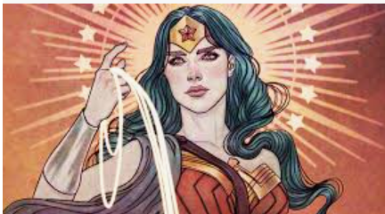

Wonder Woman is one of the world's most popular superheroes, and with Wonder Woman 1984 coming to screens in a little more than seven days, love for Diana of Themyscira will just increment. Be that as it may, regardless of whether you're a long-lasting fan or another person to Wonder Woman's reality, there might be significantly more to her than you know, particularly with regards to her forces and her capacities. Everybody knows about her super-strength, her bullet-deflecting bracelets, and her Lasso of Truth. But, she's also had the option to transport and converse with creatures.
